Introduction to
Machine Learning Explainability
Part I
Kacper Sokol
Brief History of Explainability
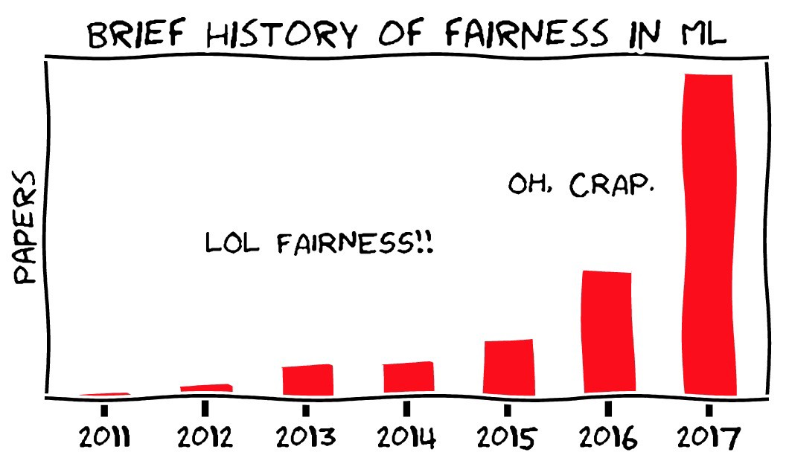
Expert Systems (1970s & 1980s)
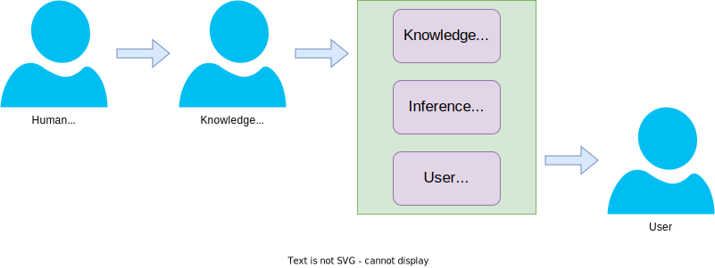Transparent Machine Learning Models
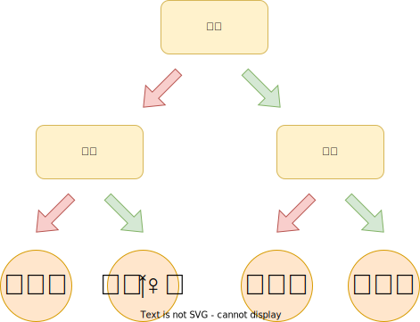
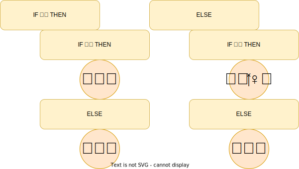
Rise of the Dark Side (Deep Neural Networks)
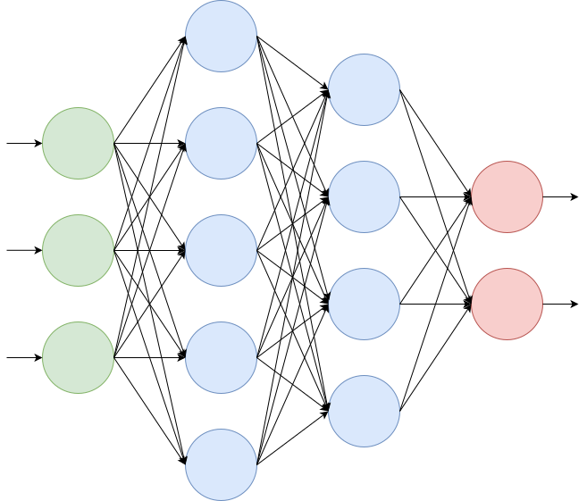
- No need to engineer features (by hand)
- High predictive power
- Black-box modelling
DARPA’s XAI Concept

Why We Need Explainability
Benefits
Trustworthiness
No silly mistakes
Fairness
Does not discriminate
New knowledge
Aids in scientific discovery
Legislation
Does not break the law
- EU’s General Data Protection Regulation
- California Consumer Privacy Act
Stakeholders
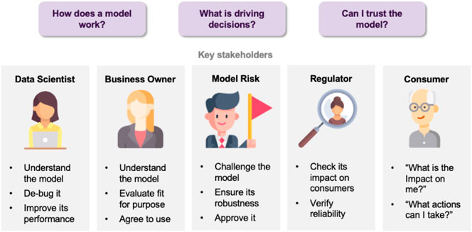
Example of Explainability
\[
f(\mathbf{x}) = 0.2 \;\; + \;\; 0.25 \times x_1 \;\; + \;\; 0.7 \times x_4 \;\; - \;\; 0.2 \times x_5 \;\; - \;\; 0.9 \times x_7
\]
\[
\mathbf{x} = (0.4, \ldots, 1, \frac{1}{2}, \ldots \frac{1}{3})
\]
\[ f(\mathbf{x}) = 0.2 \;\; \underbrace{+0.1}_{x_1} \;\; \underbrace{+0.7}_{x_4} \;\; \underbrace{-0.1}_{x_5} \;\; \underbrace{-0.3}_{x_7} \;\; = \;\; 0.6 \]
Important Developments
Where Is the Human? (circa 2017)
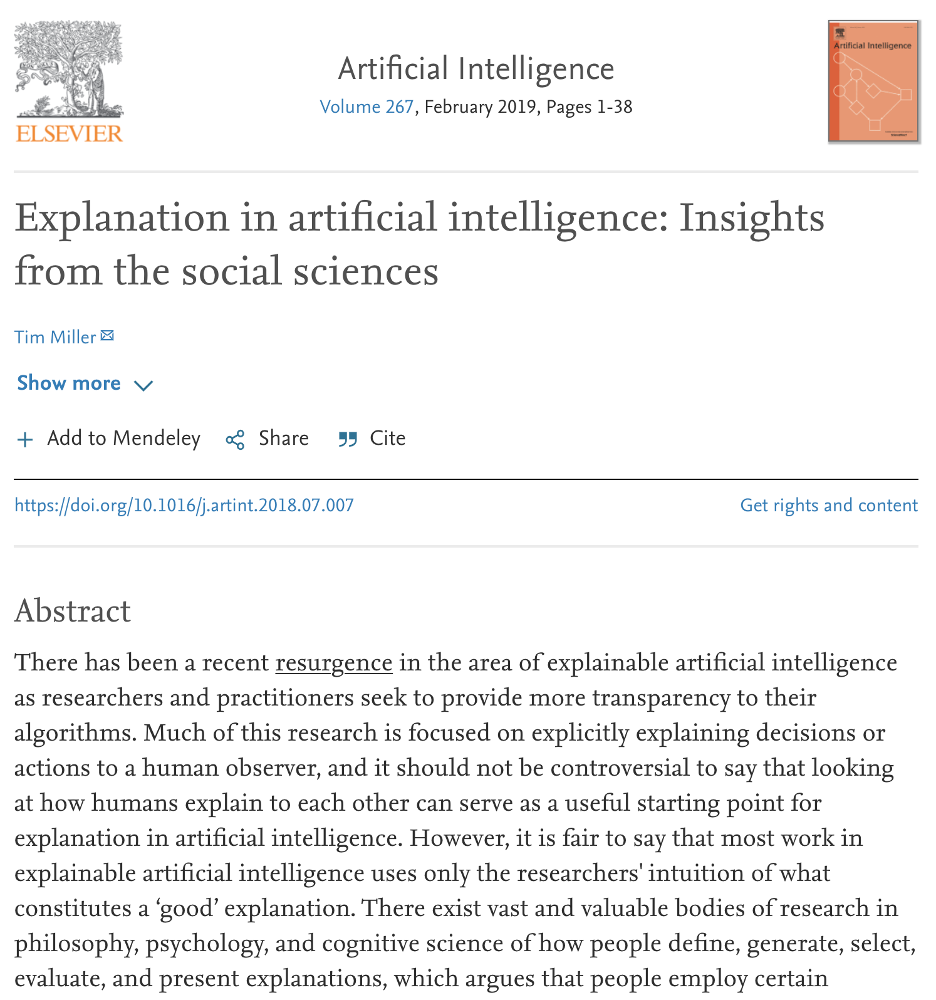 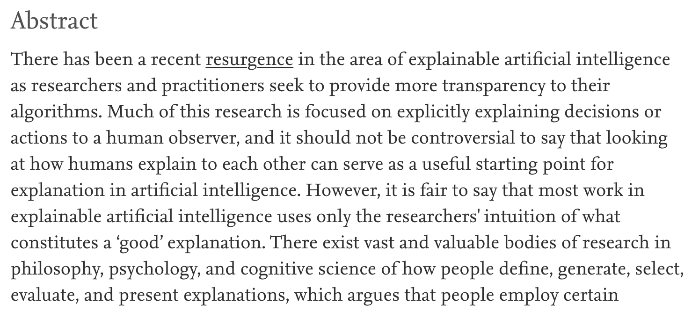
Humans and Explanations
- Human-centred perspective on explainability
- Infusion of explainability insights from social sciences
- Interactive dialogue (bi-directional explanatory process)
- Contrastive statements (e.g., counterfactual explanations)
Exploding Complexity (2019)
 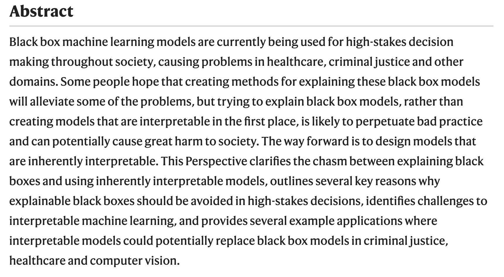
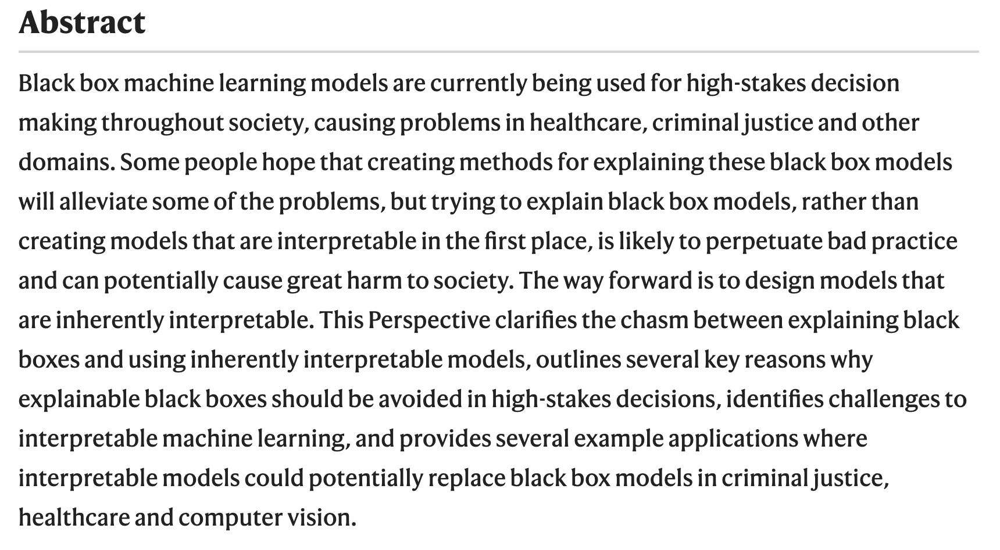
Ante-hoc vs. Post-hoc
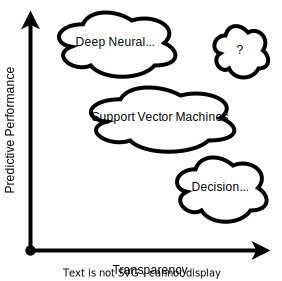Black Box + Post-hoc Explainer
- Chose a well-performing black-box model
- Use explainer that is
- post-hoc (can be retrofitted into pre-existing predictors)
- and possibly model-agnostic (works with any black box)

Caveat: The No Free Lunch Theorem
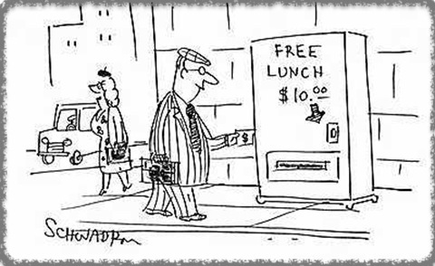
Post-hoc explainers have poor fidelity
- Explainability needs a process similar to KDD, CRISP-DM or BigData
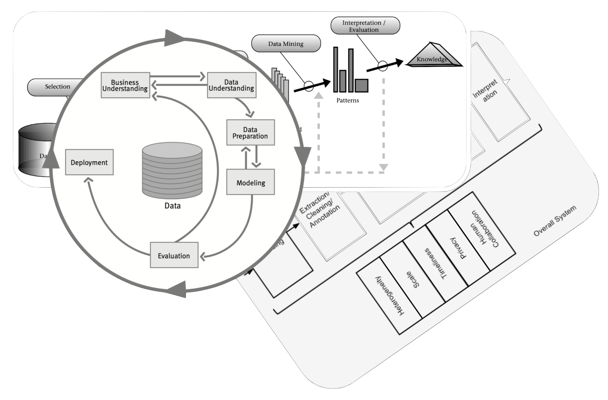 - Focus on engineering informative features and inherently transparent models
It requires effort
XAI process
A generic eXplainable Artificial Intelligence process is beyond our reach at the moment
XAI Taxonomy spanning social and technical desiderata:
• Functional • Operational • Usability • Safety • Validation •
(Sokol and Flach, 2020. Explainability Fact Sheets: A Framework for Systematic Assessment of Explainable Approaches)Framework for black-box explainers
(Henin and Le Métayer, 2019. Towards a generic framework for black-box explanations of algorithmic decision systems)
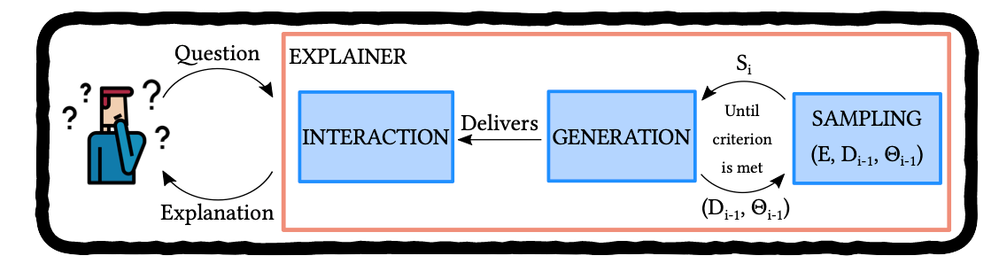
Taxonomy of Explainable AI
(Explainability Fact Sheets)
Social and technical explainability desiderata spanning five dimensions
- functional – algorithmic requirements
- usability – user-centred properties
- operational – deployment setting
- safety – robustness and security
- validation – evaluation, verification and validation
👥 Audience
- 👩🔬 Researchers (creators)
- 👨💻 Practitioners (users):
engineers & data scientists - 🕵️♀️ Compliance Personnel (evaluators):
policymakers & auditors
⚙️️ Operationalisation
- Work Sheets:
design & development - Fact Sheets:
assessment & comparison - Checklist:
inspection, compliance, impact & certification
🧰 Applicability
- Explainability Approaches (theory)
- Algorithms (design)
- Implementations (code)
Running Example: Counterfactual Explanations
Had you been 10 years younger, your loan application would be accepted.

(F) Functional Requirements
- F1 Problem Supervision Level
- F2 Problem Type
- F3 Explanation Target
- F4 Explanation Breadth/Scope
- F5 Computational Complexity
- F6 Applicable Model Class
- F7 Relation to the Predictive System
- F8 Compatible Feature Types
- F9 Caveats and Assumptions
|
F1 Problem Supervision Level |
|
|
F2 Problem Type |
|
|
F6 Applicable Model Class |
|
|
F7 Relation to the Predictive System |
|
|
F5 Computational Complexity |
|
|
F8 Compatible Feature Types |
|
|
F9 Caveats and Assumptions |
|
|
F3 Explanation Target |
|
|
F4 Explanation Breadth/Scope |
|
(U) Usability Requirements
- U1 Soundness
- U2 Completeness
- U3 Contextfullness
- U4 Interactiveness
- U5 Actionability
- U6 Chronology
- U7 Coherence
- U8 Novelty
- U9 Complexity
- U10 Personalisation
- U11 Parsimony
|
U1 Soundness |
How truthful it is with respect to the black box? |
(✔) |
|
U2 Completeness |
How well does it generalise? |
(✗) |
|
U3 Contextfullness |
“It only holds for people older than 25.” |
|
|
U11 Parsimony |
How short is it? |
(✔) |
|
U6 Chronology |
More recent events first. |
|
|
U7 Coherence |
Comply with the natural laws (mental model). |
|
|
U8 Novelty |
Avoid stating obvious / being a truism. |
|
|
U9 Complexity |
Appropriate for the audience. |
|
U5 Actionability |
Actionable foil. |
(✔) |
|
U4 Interactiveness |
User-defined foil. |
(✔) |
|
U10 Personalisation |
User-defined foil. |
(✔) |
(O) Operational Requirements
- O1 Explanation Family
- O2 Explanatory Medium
- O3 System Interaction
- O4 Explanation Domain
- O5 Data and Model Transparency
- O6 Explanation Audience
- O7 Function of the Explanation
- O8 Causality vs. Actionability
- O9 Trust vs. Performance
- O10 Provenance
|
O1 Explanation Family |
|
|
O2 Explanatory Medium |
|
|
O3 System Interaction |
|
|
O4 Explanation Domain |
|
|
O5 Data and Model Transparency |
|
|
O6 Explanation Audience |
|
|
O7 Function of the Explanation |
|
|
O8 Causality vs. Actionability |
|
|
O9 Trust and Performance |
|
|
O10 Provenance |
|
(S) Safety Requirements
- S1 Information Leakage
- S2 Explanation Misuse
- S3 Explanation Invariance
- S4 Explanation Quality
|
S1 Information Leakage |
Contrastive explanation leak precise values. |
|
S2 Explanation Misuse |
Can be used to reverse-engineer the black box. |
|
S3 Explanation Invariance |
Does it always output the same explanation (stochasticity / stability)? |
|
S4 Explanation Quality |
Is it from the data distribution? |
(V) Validation Requirements
- V1 User Studies
- V2 Synthetic Experiments
|
V1 User Studies |
|
|
V2 Synthetic Experiments |
Examples
👩🔬 Researcher’s 🎩
- 🔍 only works with predictive models that output numbers (F2 Problem Type)
- Is 🔍 intended for regressors?
- Can 🔍 be used with probabilistic classifiers?
- 🔍 only works with numerical features (F8 Compatible Feature Types)
- If data have categorical features, is applying one-hot encoding suitable?
- 🔍 is model agnostic (F6 Applicable Model Class)
- Can 🔍 be used with any predictive model?
🔍 has nice theoretical properties (F9 Caveats and Assumptions)
The explanation is always [insert your favourite claim here].
- This claim may not hold for every black-box model (model agnostic explainer)
- The implementation does not adhere to the claim
👨💻 Engineer’s 🎩
- 🔍 explains song recommendations (O7 Function of the Explanation)
- 🔍 explains how users’ listening habits and interactions with the service influence the recommendations (O10 Provenance & U5 Actionability)
- How does 🔍 scale? (F5 Computational Complexity)
- Required to serve explanations in real time
- Will the computational complexity of the algorithm introduce any lags?
- Music listeners are the recipients of the explanations (O6 Explanation Audience)
- They are not expected to have any ML experience or background (U9 Complexity)
- They should be familiar with general music concepts (genre, pace, etc.) to appreciate the explanations (O4 Explanation Domain)
- The explanations will be delivered as snippets of text (O2 Explanatory Medium)
- They will include a single piece of information (U11 Parsimony)
- They are one-directional communication (O3 System Interaction & U4 Interactiveness)
🕵️♀️ Auditor’s 🎩
- Are the explanations sound (U1) and complete (U2)?
- Do they agree with the predictive model?
- Are they coherent with the overall behaviour of the model?
- Are the explanations placed in a context? (U3 Contextfullness)
- “This explanation only applies to songs of this particular band.”
- Will I get the same explanation tomorrow? (S3 Explanation Invariance)
- Confidence of the predictive model
- Random effects within the 🔍 algorithm
- Does the explainer leak any sensitive information? (S1 Information Leakage)
- →explanation←
“Had you been older than 30, your loan application would have been approved.” - →context←
“This age threshold applies to people whose annual income is upwards of £25,000.”
- →explanation←
- Why don’t I “round up” my income the next time? (S2 Explanation Misuse)
- Was 🔍 validated for the problem class that it is being deployed on? (V2 Synthetic Validation)
- Does 🔍 improve users’ understanding? (V1 User Studies)
LIME Explainability Fact Sheet
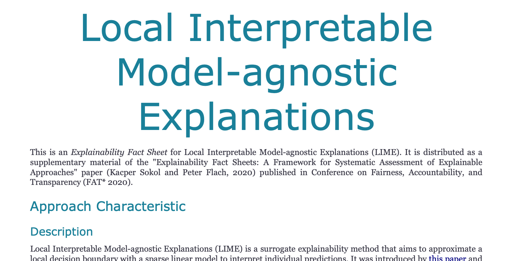Challenges
- The desiderata list is neither exhaustive nor prescriptive
- Some properties are incompatible or competing – choose wisely and justify your choices
- Should I focus more on property F42 or F44?
- For O13, should I go for X or Y?
- Other properties cannot be answered uniquely
- E.g., coherence with the user’s mental model
- The taxonomy does not define explainability
What Is Explainability?
(You know it when you see it!)
Lack of a universally accepted definition
- Simulatability
(Lipton, 2018. The mythos of model interpretability) - The Chinese Room Theorem
(Searle, 1980. Minds, brains, and programs) - Mental Models
(Kulesza et al., 2013. Too much, too little, or just right? Ways explanations impact end users’ mental models)- Functional – operationalisation without understanding
- Structural – appreciation of the underlying mechanism
Defining explainability
\[ \texttt{Explainability} \; = \] \[ \underbrace{ \texttt{Reasoning} \left( \texttt{Transparency} \; | \; \texttt{Background Knowledge} \right)}_{\textit{understanding}} \]
- Transparency – insight (of arbitrary complexity) into operation of a system
- Background Knowledge – implicit or explicit exogenous information
- Reasoning – algorithmic or mental processing of information
Explainability → explainee walking away with understanding
Understanding, explainability & transparency
A continuous spectrum rather than a binary property
Evaluating Explainability
Automated Decision-making

Naïve view

Evaluation Tiers
| Humans | Task | |
|---|---|---|
| Application-grounded Evaluation | Real Humans | Real Tasks |
| Human-grounded Evaluation | Real Humans | Simple Tasks |
| Functionally-grounded Evaluation | No Real Humans | Proxy Tasks |
Explanatory insight & presentation medium

Phenomenon & explanation

Take-home Messages
Each (real-life) explainability scenario is unique and requires a bespoke solution
Explainers are socio-technical constructs, hence we should strive for seamless integration with humans as well as technical correctness and soundness
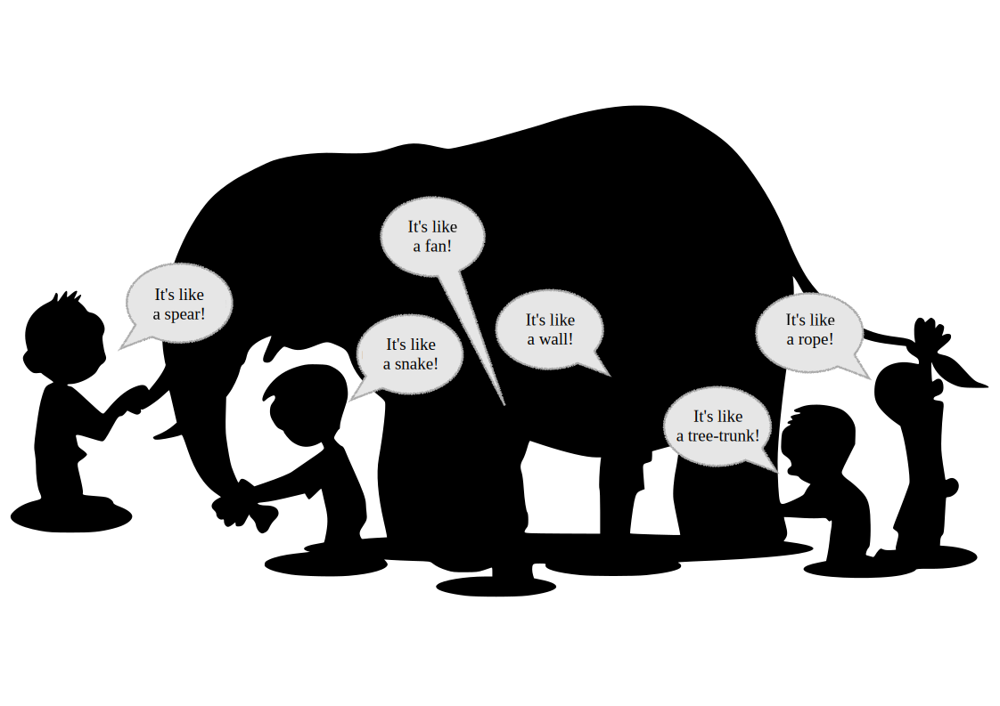
Useful Resources
📖 Books
- Survey of machine learning interpretability in form of an online book
- Overview of explanatory model analysis published as an online book
- Hands-on machine learning explainability online book (URL to follow)
📝 Papers
- General introduction to interpretability
- Introduction to human-centred explainability
- Critique of post-hoc explainability
- Survey of interpretability techniques
- Taxonomy of explainability approaches
💽 Software
- LIME (Python, R)
- SHAP (Python, R)
- Microsoft’s Interpret
- Oracle’s Skater
- IBM’s Explainability 360
- FAT Forensics